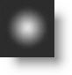
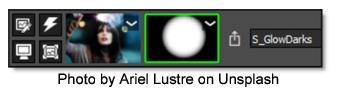
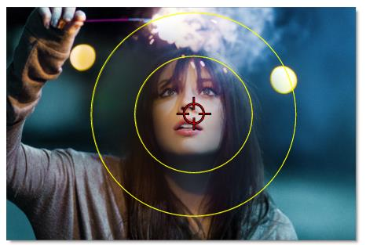

Spot Mask
Creates a circular spot mask and is adjusted using the two circular on-screen controls as well as parameters in the Toolbar.
Spot Mask consists of a combination of on-screen and toolbar controls.
On-Screen Controls
Radius
The un-blurred radius of the spot is controlled using the inner on-screen circle.
Falloff Radius
The blurred edge radius is controlled using the outer on-screen circle.
Toolbar Controls
Aspect Ratio
The aspect ratio of the spot.
Falloff
Moves the falloff towards the spot centerpoint.